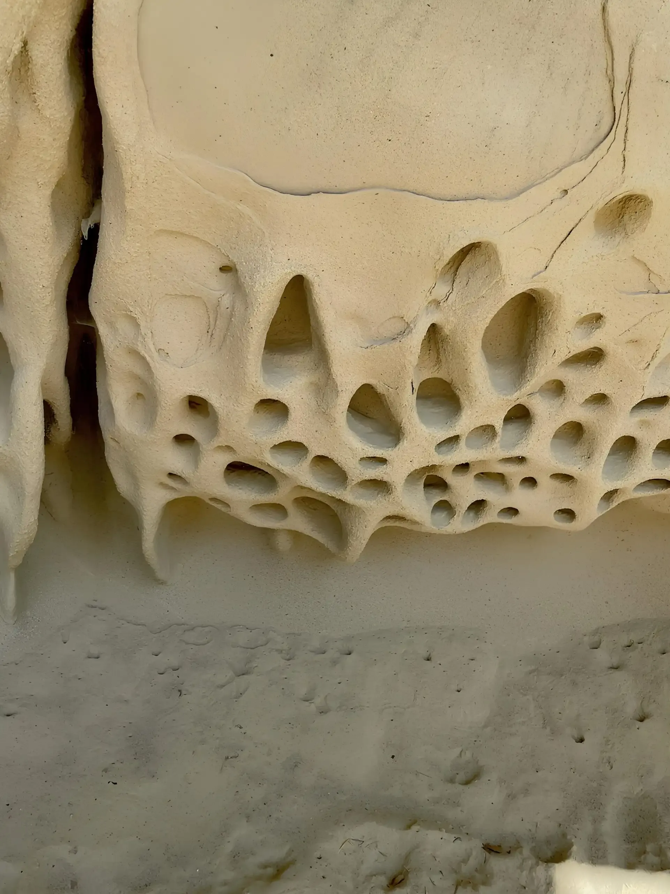
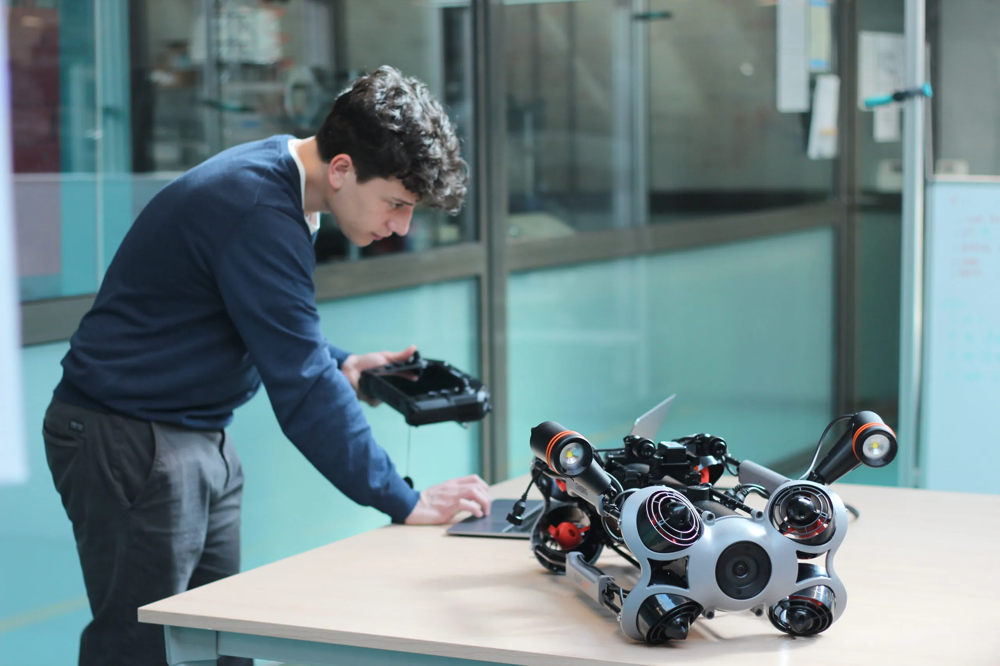
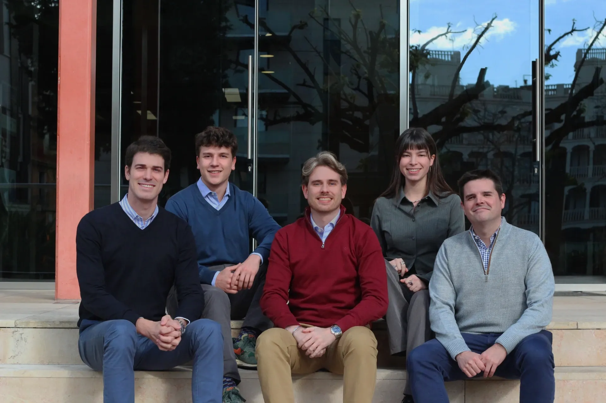

Arrecifes artificiales, robótica submarina y seguimiento ecológico para recuperar hábitats degradados.
Empresa de restauración marina que diseña y fabrica estructuras, las instala y estudia su colonización.
Puede abrir el proceso completo: diseño, fabricación, instalación, observación submarina y medición de resultados.


